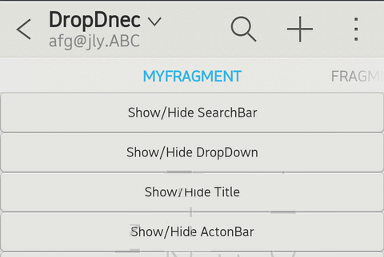

A ActionBar he action bar is at the top of the page and it can shows a title, a subtitle, the 'up' and a custom widget. By Default, the action bar shows the page title. Actionbar can divide into four part. ActionBar default setting, Menu/MenuItem, Footer and ActionBarWidget.
(1) ActionBar default Setting: can set Title, subtitle, customized widget.
(2) Menu and MenuItem: let developer add menuitems to actionbar. They can add items with icon if there are more than Three menu icons they will show in popupmenu when you click overflow button.
(3) Footer: location on the button of the screen. Let developer define it's function it's function just like Button. At most developer can add four footer button in this section.
(4)ActionDropDownWidget: ActionDropDownWidget is that let developer set title and subtitle and provider the Popupmenu while user press this ActionDropDownWidget. this is a customize widget to replace original actionbar title style.

In this section, you can know how to use the ActionBar Default Setting.
void ActionBarTestPage::initSearchBar() {
if (mpSearchBar != NULL)
return;
// make a custom actionBar widget
mpSearchBar = this->getActionBar()->createActionBarWidget();
if (mpSearchBar == NULL) {
GLOG(LOG_TAG, LOGER, "failed to create search bar...");
return;
}
mpSearchControl = new LinearController(this);
mpSearchParams = new LinearControllerParams(ControllerParams::MATCH_PARENT,
ControllerParams::MATCH_PARENT);
mpSearchControl->setControllerParams(mpSearchParams);
// new a EditWidget
mpSearchBarEdit = new EditWidget(this);
// Set the edit Hint
mpSearchBarEdit->setHint(String("I am a fake search bar ...."));
// set the mpSearchControl padding
mpSearchControl->setPadding(0, 25, 0, 25);
// Add Editwidgt to the LinearController
mpSearchControl->addWidget(mpSearchBarEdit, mpSearchParams);
// set customize widget to ActionBar
mpSearchBar->setCustomWidget(mpSearchControl);
mpSearchBar->setDisplayOptions(ActionBar::DISPLAY_SHOW_HOME_AS_UP
| ActionBar::DISPLAY_SHOW_CUSTOM);
}
void ActionBarTestPage::onInit(Persistence const p) {
GLOGENTRY(LOG_TAG);
ActionBar mActionBar = getActionBar(); // Must use Theme.ActionBar
// set the ActionBar Title
mActionBar->setTitle("happhappyhappyhappyhappyhappyhappyhappyhappyhappyhappyhappyy");
// set the ActionBar Title
mActionBar->setSubtitle("dfgdfgdfgdfgdgdfgdgdfgdfgdfgdfgdfgdfgdfgdfgdfgdfdfgdfgdfg");
// setting the default customize actionbar, here we use searchBar
initSearchBar();
mpScene->setupSceneLayout();
}
// the current display options.
int32_t getDisplayOptions() const;
// Set the current custom widget.
// Display option should be DISPLAY_SHOW_CUSTOM.
void setCustomWidget(gaia::core::Widget* widget);
// Returns the current custom widget.
gaia::core::Widget* getCustomWidget() const;
// Set display options.
void setDisplayOptions(int32_t options);
// Get the Footer. Return null if there is no footer.
gaia::ui::Footer* getFooter() const;
// Create a new ActionBarWidget and install it to the action bar
gaia::ui::ActionBarWidget* createActionBarWidget();
// Show a specified ActionBarWidget
void showActionBarWidget(gaia::ui::ActionBarWidget* widget);
// Get the default ActionBarWidget
gaia::ui::ActionBarWidget* getDefaultActionBarWidget() const;
// Get current ActionBarWidget
gaia::ui::ActionBarWidget* getCurrentActionBarWidget() const;
// Show the action bar
void show();
// Hide the action bar
void hide();
// Return true if the action bar is visible
bool isShowing();
// Set the action bar's title.
void setTitle(const gaia::base::CharSequence& title);
// Set the action bar's subtitle.
void setSubtitle(const gaia::base::CharSequence& title);
// Set the action bar's title.
void setTitle(const gaia::base::String& title);
// Set the action bar's subtitle.
void setSubtitle(const gaia::base::String& title);
void ActionBarTestPage::onInit(Persistence const p) {
GLOGENTRY(LOG_TAG);
ActionBar mActionBar = getActionBar(); // Must use Theme.ActionBar
// set the ActionBar Title
mActionBar->setTitle("happhappyhappyhappyhappyhappyhappyhappyhappyhappyhappyhappyy");
// set the ActionBar Title
mActionBar->setSubtitle("dfgdfgdfgdfgdgdfgdgdfgdfgdfgdfgdfgdfgdfgdfgdfgdfdfgdfgdfg");
mpScene->setupSceneLayout();
}
// While init page it will call by System
bool ActionBarTestPage::onCreateOptionsMenu(Menu* menu) {
GLOGENTRY(LOGTAG);
GLOG(LOG_TAG, LOGDBG, "Page::OnCreateOptionsMenu, %p", menu);
mpMenu = menu;
// remove buttons created by fragments
menu->removeGroup(1);
// add menu buttons for this activity
MenuItem* m = menu->add(0, 0, 1, String("Option 1"));
GLOG(LOG_TAG, LOGDBG, "Option 1 MenuItem address = %p", m);
m->setIcon(com::gaia::R::drawable::btn_search);
m->setShowAsAction(MenuItem::SHOW_AS_ACTION_IF_ROOM);
MenuItem* m2 = menu->add(0, 1, 1, String("Option 2"));
m2->setIcon(com::gaia::R::drawable::btn_add);
GLOG(LOG_TAG, LOGDBG, "Option 2 MenuItem address = %p", m2);
m2->setShowAsAction(MenuItem::SHOW_AS_ACTION_IF_ROOM);
MenuItem* mid2 = menu->findItem(0);
GLOG(LOG_TAG, LOGDBG, "id 0 MenuItem address = %p", mid2);
return true;
}
//While Optionitem select will call this function by system
bool ActionBarTestPage::onOptionsItemSelected(MenuItem* item) {
GLOGENTRY(LOGTAG);
GLOG(LOG_TAG, LOGDBG, "MenuItem(%p) title=%s groupid=%d, itemid=%d order=%d",
this, item->getTitle() != NULL ? item->getTitle()->toString().string() : "",
item->getGroupId(), item->getItemId(), item->getOrder());
if (item->getItemId() == 0) {
mpMenu->removeItem(item->getItemId());
}
// Reture false so that the Fragment's onOptionsItemSelected would be called.
return false;
}
// Menu API // Add a new item to the menu. This item displays the given title for its label. virtual MenuItem* add(const gaia::base::CharSequence& title);
// Add a new item to the menu. This item displays the given title for its label.
virtual MenuItem* add(int32_t titleRes);
// Add a new item to the menu. This item displays the given title for its label.
virtual MenuItem* add(int32_t groupId, int32_t itemId, int32_t order,
const gaia::base::CharSequence& title);
// Add a new item to the menu. This item displays the given title for its label.
virtual MenuItem* add(int32_t groupId, int32_t itemId, int32_t order,
int32_t titleRes);
// Remove all existing items from the menu, leaving it empty as if it had just been created.
virtual void clear();
// Remove all items in the given group.
virtual void removeGroup(int32_t groupId);
// Remove the item with the given identifier.
virtual void removeItem(int32_t id);
// Return the menu item with a particular identifier.
virtual MenuItem* findItem(int32_t id);
// Gets the menu item at the given index.
virtual MenuItem* getItem(int32_t index);
// Get the number of items in the menu.
virtual int32_t size();
// MenuItem API
// Return the group identifier that this menu item is part of.
int32_t getGroupId();
// Returns the icon for this item as a Drawer.
gaia::graphics::Drawer* getIcon();
// Return the identifier for this menu item.
int32_t getItemId();
// Return the category and order within the category of this item.
int32_t getOrder();
// Retrieve the current title of the item.
gaia::base::CharSequence* getTitle();
// Change the icon associated with this item.
void setIcon(gaia::graphics::Drawer* icon);
// Change the icon associated with this item.
void setIcon(int32_t iconRes);
// Sets how this item should display in the presence of an Action Bar.
void setShowAsAction(int32_t actionEnum);
// Change the title associated with this item.
void setTitle(const gaia::base::CharSequence& title);
// Change the title associated with this item.
void setTitle(int32_t title);
// Set the visibility of this menu item
void setVisible(bool visible);
// Sets whether the menu item is enabled
void setEnabled(bool enabled);
// Check whether the menu item is visible
bool isVisible();
// Set an action widget for this menu item to replace the automatically generated menu item widget.
void setActionWidget(gaia::core::Widget* widget);
void ActionBarTestPage::onInit(Persistence const p) {
GLOGENTRY(LOG_TAG);
ActionBar mActionBar = getActionBar(); // Must use Theme.ActionBar
// set the ActionBar Title
mActionBar->setTitle("happhappyhappyhappyhappyhappyhappyhappyhappyhappyhappyhappyy");
// set the ActionBar Title
mActionBar->setSubtitle("dfgdfgdfgdfgdgdfgdgdfgdfgdfgdfgdfgdfgdfgdfgdfgdfdfgdfgdfg");
Footer* footer = NULL;
// get the Footer from ActionBar
if (mActionBar != NULL) {
footer = mActionBar->getFooter(); // Must use Theme.ActionBar.Footer
}
if (footer != NULL) {
mpButton1 = new FooterButton(this);
// set Footer Button Text
mpButton1->setText("Rotate");
mpButton1->setOnClickListener(mpClickListener);
mpDrawer1 = mpScene->getResources()->getDrawer(ActionBarTestPkg::R::drawable::btn_add);
// Set the footer Button icon
mpButton1->setIcon(mpDrawer1);
mpButton2 = new FooterButton(this);
// set Footer Button Text
mpButton2->setText("Search");
mpDrawer2 = mpScene->getResources()->getDrawer(ActionBarTestPkg::R::drawable::btn_search);
// Set the footer Button icon
mpButton2->setIcon(mpDrawer2);
// Add Footer Button to Footer
footer->addWidget(mpButton1);
footer->addWidget(mpButton2);
}
mpScene->setupSceneLayout();
}
// Set the icon to a given Drawer
void setIcon(const gaia::graphics::Drawer* top);
void ActionBarTestPage::onInit(Persistence const p) {
GLOGENTRY(LOG_TAG);
ActionBar mActionBar = getActionBar(); // Must use Theme.ActionBar
// set the ActionBar Title
mActionBar->setTitle("happhappyhappyhappyhappyhappyhappyhappyhappyhappyhappyhappyy");
// set the ActionBar Title
mActionBar->setSubtitle("dfgdfgdfgdfgdgdfgdgdfgdfgdfgdfgdfgdfgdfgdfgdfgdfdfgdfgdfg");
// new ActionDropDownWidget to instead original ActionBar Title
mpDropDown = new ActionDropDownWidget(this);
// set ActionDropDown title
mpDropDown->setTitle(String("DropDown"));
// set ActionDropDown subtitle
mpDropDown->setSubtitle(String("afg@jly.ABC"));
StringArray items(3);
// set the click popupmenu item
items.replaceAt(String("item 1"), 0);
items.replaceAt(String("item 2"), 1);
items.replaceAt(String("item 3"), 2);
mpDropDown->setItemListArray(items);
mpOnItemClickListener = new MyDefaultOnItemClickListener(this, mpDropDown);
mpDropDown->setOnItemClickListener(mpOnItemClickListener);
mpDropDown->setOnDismissListener(this);
mActionBar->setCustomWidget(mpDropDown);
mActionBar->setDisplayOptions(ActionBar::DISPLAY_SHOW_HOME_AS_UP
| ActionBar::DISPLAY_SHOW_CUSTOM);
mpScene->setupSceneLayout();
}
// Click the ActionBarDropDownWidget's popupmenu item will call this function.
void MyDefaultOnItemClickListener::onItemClick(AbsListWidget pParent,
Widget pWidget,
int32_t position, int64_t id) {
GLOGENTRY(LOG_TAG);
if (mpHintBox != NULL)
delete mpHintBox;
mpHintBox = HintBox::makeTextN(mpPage, String::format("item %d", position), 0);
mpHintBox->show();
if (mpDropDown != NULL)
mpDropDown->dismiss();
GLOG(LOG_TAG, LOGINFO,
"OnItemClick: pParent=%p, pWidget=%p, pos=%d, id=%lld",
pParent, pWidget, position, id);
}
// Set the icon to a given Drawer
void setIcon(const gaia::graphics::Drawer* top);